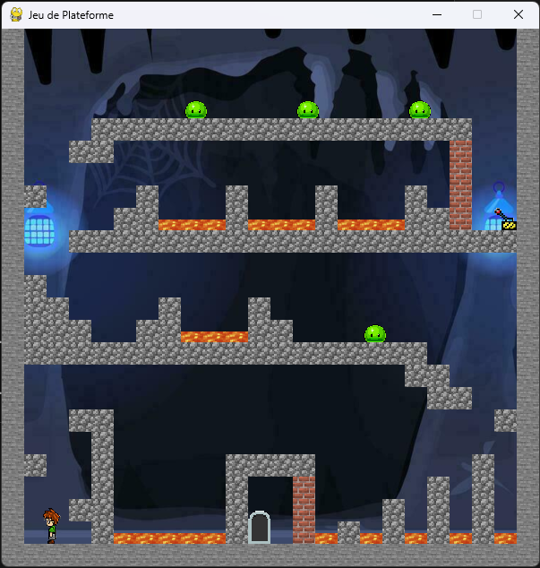
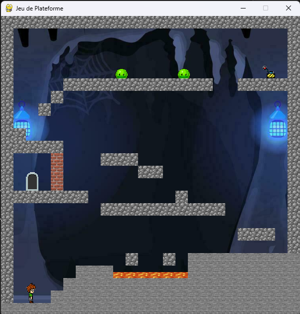
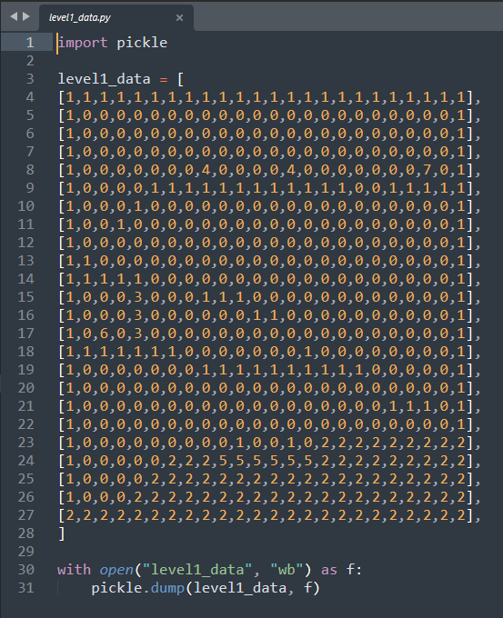

Cave Escape est un projet personnel développé au lycée en Python avec Pygame. Le joueur incarne un personnage piégé dans une grotte et doit trouver la sortie en traversant des niveaux de plateforme.
Le jeu repose sur des mécaniques classiques de plateforme : déplacements et saut. L'objectif est d'atteindre la porte de sortie de chaque niveau pour progresser.

La partie la plus intéressante techniquement est la construction des niveaux. Chaque niveau est défini par une matrice de nombres : 0 représente une case vide, 1 de la pierre, 6 la porte de sortie, etc. Le jeu lit cette matrice et instancie les blocs correspondants à chaque position. Ce système permet de créer et modifier des niveaux très facilement sans toucher à la logique du jeu.

Ce projet a été développé au lycée, avant ma formation en BUT Informatique. Le système de matrice pour la génération de niveaux était je trouve une bonne intuition. Aujourd'hui je structurerais le code différemment, avec une meilleure séparation des responsabilités et une exploitation plus poussée de la POO, notamment avec de l'héritage pour les différents types de blocs et d'entités.